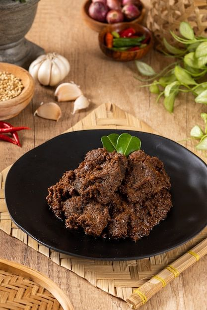
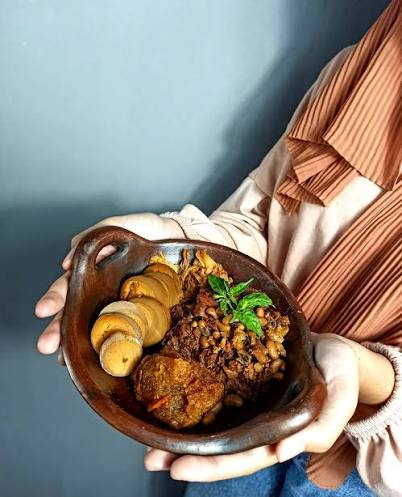

Resep Otentik
Bumbu ditumbuk secara tradisional agar aroma rempahnya utuh.
Resep rempah Nusantara yang diwariskan lintas generasi, disajikan hangat di meja Anda.
Lihat KatalogKuliner Nusantara berdiri sejak 2015 dengan satu tujuan: menjaga rasa asli masakan daerah. Setiap bumbu diracik dari rempah segar yang dikirim langsung oleh petani lokal.
Rendang kami dimasak selama 8 jam, dan kuah rawon memakai kluwek pilihan. Menu baru setiap bulan dari daerah yang berbeda.
Kunjungi kami untuk merasakan sendiri.
Harga sudah termasuk pajak 10%. Porsi rendang 200 g; kalori sekitar 450 kkal per 100 g*. Air minum: H2O gratis. Harga lama Rp 70.000 kini Rp 65.000.
Bumbu ditumbuk secara tradisional agar aroma rempahnya utuh.
Sayur dan rempah datang dari petani lokal setiap pagi.
Dapur bersih dengan standar keamanan pangan yang ketat.

